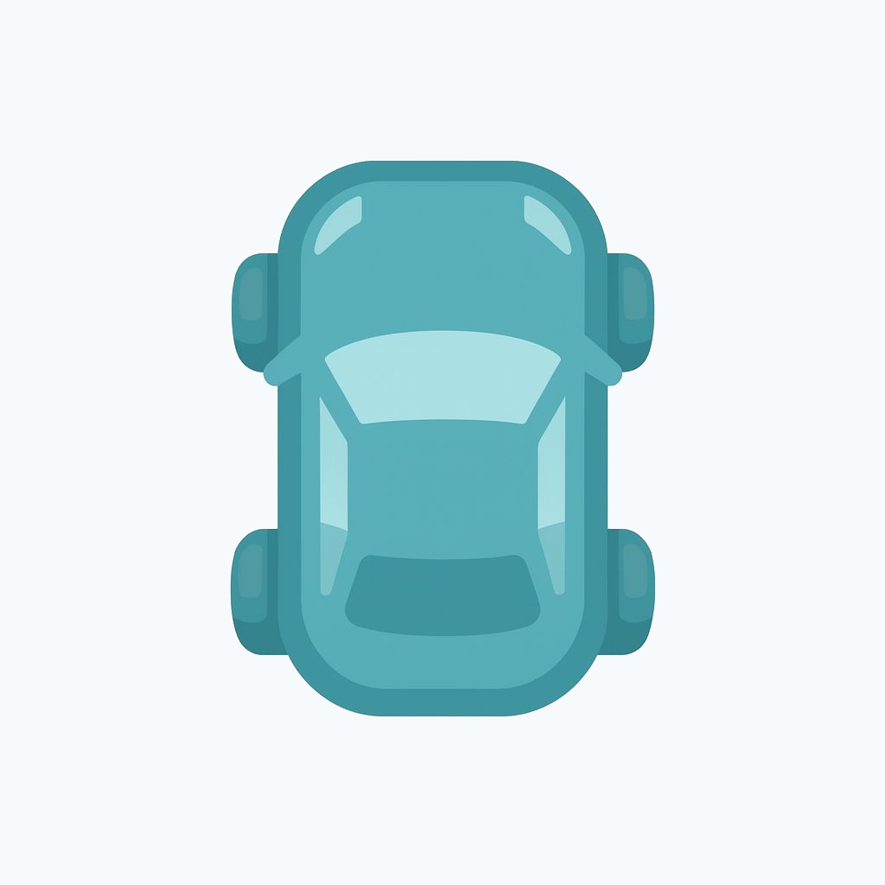

松本会計ツールポータル
黒字経営を加速する、松本会計オリジナルツール集
🔗
共有用QR
QR
📱
ホーム画面への追加方法
追加
🚗
黒字経営4WD
変動PL＋四つの実務ツールで、黒字経営を駆動する。
（㈱TKCのFXクラウドシリーズとの併用を想定しています）

PL
変動損益
⇆
売上換算
↕
価格改定
⏱
人件費
⚙︎
自動化効果
PL
ボールで学ぶ変動損益計算書
売上高と限界利益、固定費の関係を直感的に理解
⇆
それ、売上に直すといくらですか？
支出額を必要売上金額に即換算
↕
価格改定検討ツール
価格改定の影響を試算
¥
人件費見える化ツール
時間単価で人件費を可視化
⚙︎
自動化効果試算ツール
自動化の投資対効果を試算
🧰
その他便利ツール
%
受取利息・配当金 仕訳補助
手取額から源泉徴収税額を逆算・仕訳を表示
Σ
減価償却費計算ツール
定額法・定率法の償却費を即時計算
保
標準保障額・保険料換算ツール
標準保障額と保険料を売上高に換算
C
CCC計算ツール
キャッシュ・コンバージョン・サイクルを可視化
×